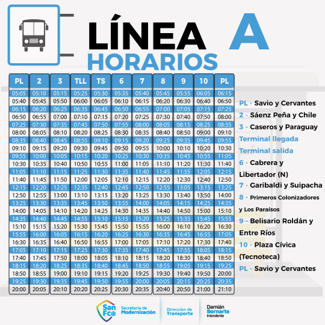
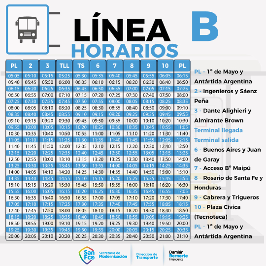
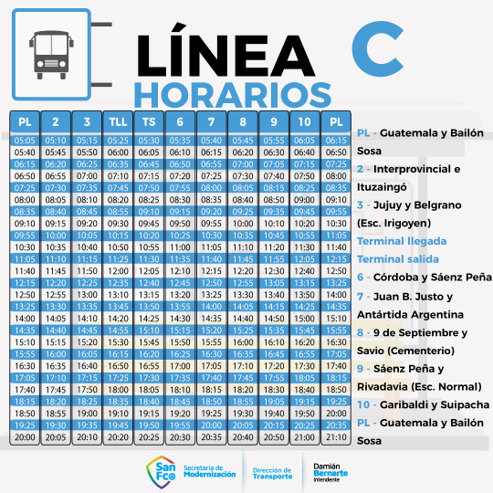

San Francisco es una ciudad ubicada en la provincia de Córdoba, Argentina. Se encuentra en el centro-oeste de la provincia, a unos 160 kilómetros de la ciudad capital, Córdoba. Con una población de alrededor de 60.000 habitantes. La ciudad cuenta con una amplia variedad de servicios y actividades culturales y hermosos parques y espacios verdes. Además, San Francisco es un importante centro económico y comercial de la región, con una importante actividad industrial y agropecuaria, y conocido por su actividad industrial y comercial
Pagina web Instagram FacebookComo se puede observar San Francisco limita directamente con la ciudad Frontera, ambas ciudades pertenecen a una provincia distinta (San Franisco pertenece a Cordoba y Frontera pertenece a Santa Fe) y se dividen por la avenida: Av. Brig. Bustos
Como nombramos en sobre la ciudad, aqui se puede observar los grandes espacios verdes que contiene esta y la distribucion de las parcelas
Mapa interactivo de Google Maps
La linea de buses de San Francisco cuenta con diferentes divisiones en "lineas", estas son: Linea A, Linea B, Linea C. A continuacion se mostraran las paradas y recorrido de cada una.
